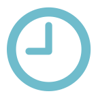
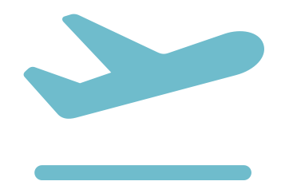
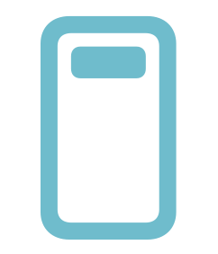
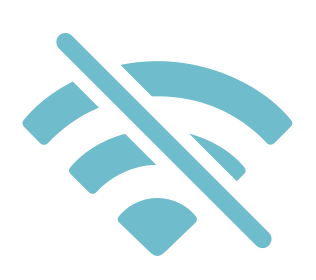
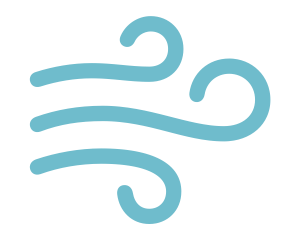
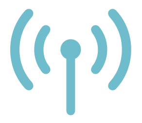
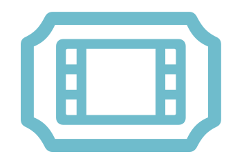
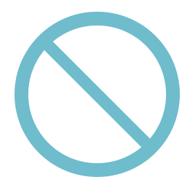

Know when it'll be bumpyOn your Lock Screen and Dynamic Island, even in airplane mode.
Minute by minute, from takeoff to landing.
Live pilot reports show what planes are feeling right now.
Guided breathing, paced to your next bumpy stretch.
Why it's bumpy, what the crew is doing and what you'll feel.
Every update says what changed and why.
Rate the ride after you land. We publish our accuracy in the app.
Live status, gates and delay alerts, free.

Live flight status
Live Activity
Works offline
Guided breathing
Pilot reports
Flight Pass
No ads